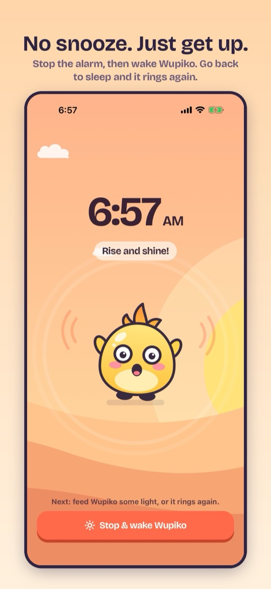
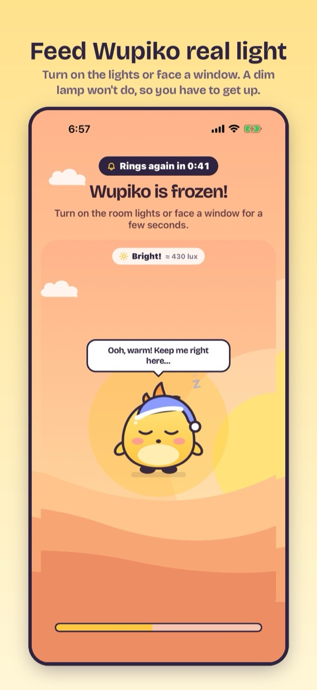
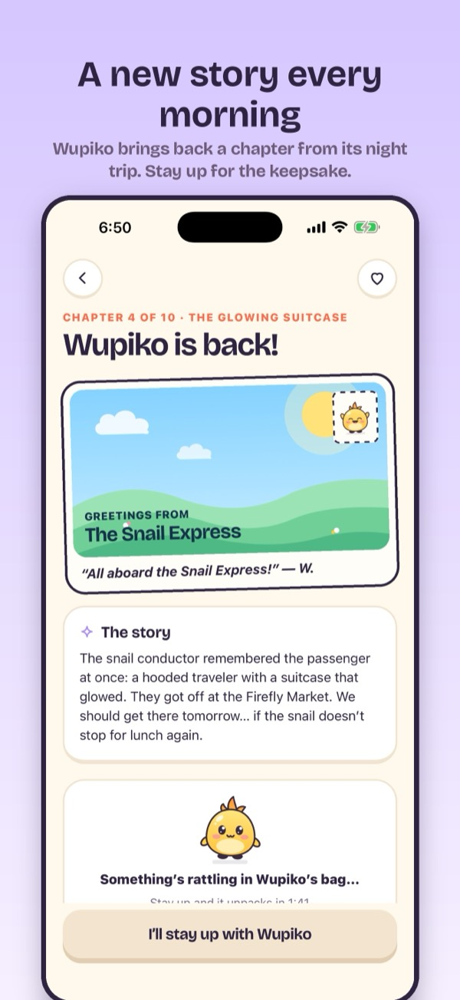
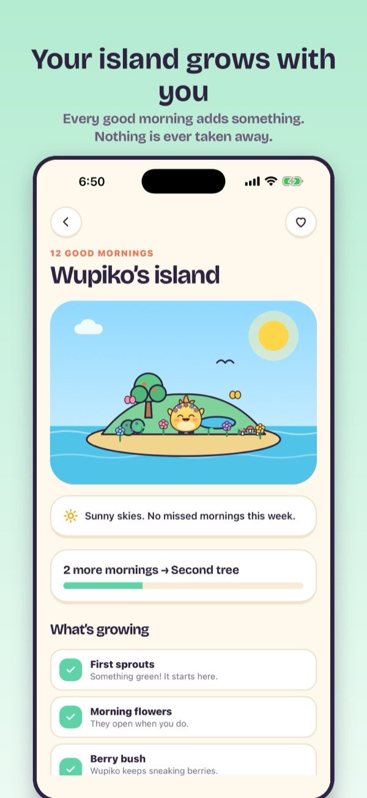

The alarm clock you can't snooze
Wupiko is an alarm app for people who sleep through alarms. To finish it, you have to get out of bed and turn on the lights. Then Wupiko tells you where it traveled last night.
Download on the App StoreFree. No ads, no account. iPhone and iPad, iOS 26 or later.
How a morning with Wupiko goes
-

1. It rings. There is no snooze.
One alarm, no snooze button. Hush it and it comes back.
-

2. Get up and feed it real light.
Wupiko wakes up frozen. Turn on the room lights or face a window for a few seconds. A bedside lamp won't do.
-

3. A new story chapter is waiting.
While you slept, Wupiko traveled. Each morning brings a postcard, the next chapter, and a keepsake if you stay up.
-

4. Good mornings grow your island.
Every morning you get up adds something to Wupiko's island. Missed ones only bring a little rain.
Why it gets you up when other alarms don't
Most alarms can be beaten half asleep: one tap on snooze and you're gone again. Wupiko asks for the one thing you can't do from bed, which is standing in a bright room. By the time it's fed, you're up, the lights are on and you're awake enough to stay that way.
Built for heavy sleepers
You can't end a wake-up from under the covers. You have to stand up, reach a light and stay there.
Something to get up for
A story that only moves forward in the morning is a nicer reason to get up than a blaring phone.
Kind, not punishing
No streaks to lose and nothing taken away. A missed morning brings rain, and tomorrow is a fresh start.
Reminders too
Set plain reminders for lunch, water or medicine. They ring once and stop when you tap Stop.
Private by design
No account, no ads, no analytics. Everything stays on your phone and works offline.
Free
No subscription and no in-app purchases.
Questions
Is Wupiko free?
Yes. Wupiko is free, with no ads, no in-app purchases and no account.
Can I snooze the alarm?
No. Wupiko has no snooze button. A wake-up alarm is only finished once you get up and feed Wupiko some light.
What happens if I silence the alarm and stay in bed?
It rings again. Hushing the alarm does not check you in, so Wupiko keeps coming back until you open the app and feed it light. If you never do, the morning counts as missed and a little rain falls on your island.
How does feeding Wupiko light work?
After the alarm, Wupiko is frozen. Turn on the room lights or face a window and hold your phone there for a few seconds while it warms up. A dim bedside lamp is not bright enough, which is the point: you have to get out of bed.
Does Wupiko take photos with my camera?
No. On iPhone the front camera is used only to measure how bright the room is. No photos or video are taken, stored or sent. If you would rather not allow the camera, Wupiko gives you a short mini-game instead.
Does the alarm ring if the app is closed?
Yes. On iPhone, Wupiko schedules alarms with Apple's AlarmKit, so iOS itself delivers them. The app does not need to be open.
Does Wupiko collect my data?
No. Everything stays on your phone. There are no accounts, no analytics and no tracking, and the app works without an internet connection.
Which phones does Wupiko work on?
Wupiko is on the App Store for iPhone and iPad running iOS 26 or later.
Can I use it for reminders too?
Yes. Besides wake-ups you can set plain reminders for things like lunch, water or medicine. They ring once and stop when you tap Stop, with no check-in.

Tomorrow, get up for real
Download Wupiko, freeMore reading: how to stop hitting snooze and what to look for in an alarm for heavy sleepers.